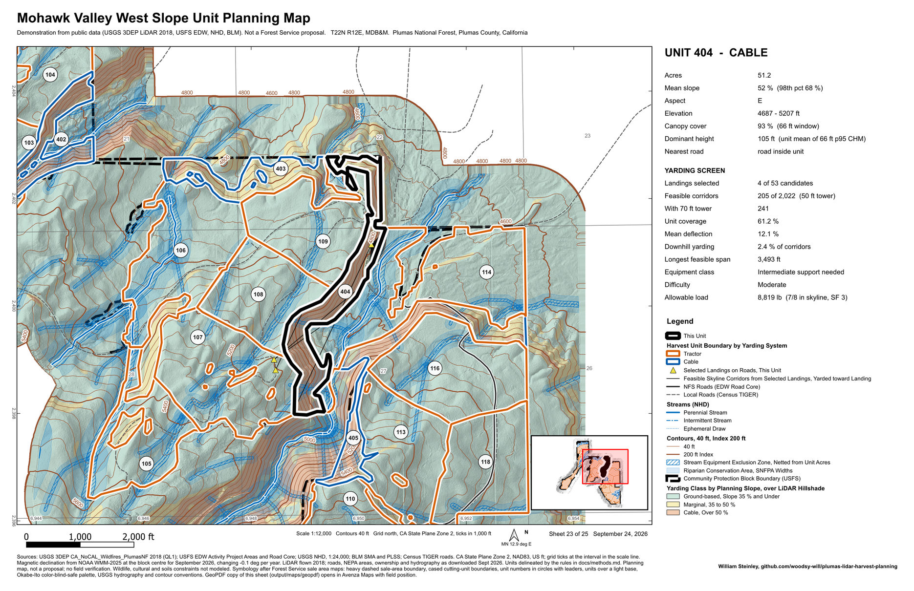
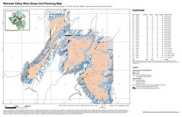
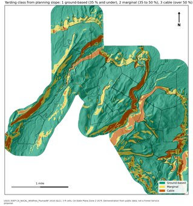
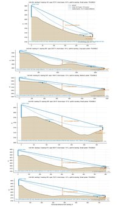
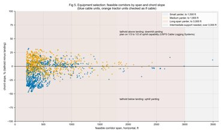
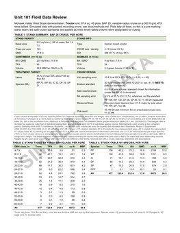

GIS Projects
A harvest-planning workflow rebuilt on public data, and the cruise compiler behind my own inventory work. Both are open source.
Mohawk Valley West Slope: LiDAR-based harvest-unit planning






Problem. A cable-versus-tractor harvest-unit plan for a 1,816-acre NEPA treatment block on the Plumas National Forest, from raw LiDAR to sale-map sheets.
Context. The workflow follows the harvest planning I worked on for this forest as a Forester III. That work is confidential, so this run uses an adjacent block I did not work on. The steps and QA checks are the same; the data is public.
Data. USGS 3DEP QL1 LiDAR from 2018, 650 million points, plus USFS EDW project areas and roads, NHD, BLM PLSS and Census TIGER.
Method. PDAL and GDAL took the point cloud to a 3 ft DTM, CHM and planning slope. I delineated 24 units by rule, then screened 8,540 skyline corridors from 314 candidate landings for deflection, clearance and PNW-39 payload. The 25-sheet 11x17 series came out of PyQGIS as print PDF and Avenza GeoPDF. A simulated BAF 20 cruise was checked to FSH 2409.12.
Result. 1,621 gross and 1,408 net acres. 18 tractor units and 6 cable; 5 of the 6 cable units have feasible corridors and one is flagged for a spur road.
Limits. No field verification. Wildlife, cultural and soils constraints are not modeled. Next is a field check of the CHM.
Forest Inventory Analyzer
Problem. Cruise data usually gets compiled in a licensed compiler or a hand-built workbook.
Data. Survey123 and Field Maps plot exports, and CSV, JSON and Excel plot files.
Method. A Rust command-line and web tool. It runs BAF expansion, TPA, basal area, cubic and board-foot volume, QMD, diameter-class and species tables, Student's t sampling error and growth projections.
Result. v0.2.0, September 2026, ships a Windows installer and macOS and Linux binaries, built after the test suite passes, with checksums. 392 tests in CI.
Limits. Placeholder volume equations, not regional tables. No taper models. MIT license, 2026.
About
I am a forester and GIS analyst based in Gold Run, in the northern Sierra Nevada, with more than eight years in the field, an M.S. in Forestry, and eligibility to sit for the California Registered Professional Forester (RPF) exam. The field work has covered federal timber sale and community protection projects on the Plumas National Forest, timber sale layout and cruising across seven states, chainsaw fuels treatments, and LiDAR forest structure and terrain analysis in R. At Jefferson Resource Company I set up ArcGIS Pro, Field Maps and Survey123 for field data collection and automated map production with ArcPy and lidR. My M.S. thesis on fire return intervals in the East Texas Pineywoods is the basis of a published fire ecology paper on which I am lead author.
Timber sale and harvest-unit mapping, inventory analysis and LiDAR stand structure were the day-to-day work on federal projects, in ArcGIS Pro, ArcPy and R. The cruise compiler above is my own open-source tool, written on my own time. The harvest-planning workflow is rebuilt from scratch on public data in the first project above. All of my California timber sale work has been on National Forest land.
Professional Resume
Download resume (PDF, 2 pages)
Experience
- Write land management plans for private landowners. Each plan turns owner objectives into a written prescription and a treatment schedule. Part-time consulting practice with field projects in Texas.
- Perform the prescribed treatments personally: chainsaw and hand thinning, brush and invasive species control.
- Run business operations for the two-person firm: client acquisition, project scoping, and invoicing.
- Supervised field crews of up to four personnel across ~8,000 acres on the Plumas National Forest Community Protection Project. Reviewed 500+ plots and caught layout, marking, and survey errors before U.S. Forest Service (USFS) deliverables went out.
- Applied National Environmental Policy Act (NEPA) requirements and silvicultural prescriptions in the field, including unit layout for helicopter yarding.
- Led the move from Avenza Maps Pro to ArcGIS Online, ArcGIS Pro, Esri Field Maps, and Survey123. Wrote two technical guides and the training materials that brought the crews over. Ended manual re-keying of field data and gave crews real-time cloud access.
- Automated map production and spatial data processing in Python and ArcPy, replacing hand-assembled maps with one standard output across deliverables. Validated every output against manual quality-control checks.
- Built CHM and DTM products from LiDAR point clouds in R (lidR). Checked point density and compared resampling approaches before setting the grid resolution. Produced slope and terrain derivatives used to pick yarding systems and delineate harvest units.
- Wrote R and lidR routines for individual tree crown delineation and canopy cover estimation, an open-source alternative to licensed processing software.
- Published and maintained 40+ hosted feature layers and geodatabases and managed offline map areas across three project areas. Crews used them to collect stream, inventory plot, archaeological, and forest disease and dieback data for timber sale planning, layout, and resource surveys.
- Field liaison between JRC, USFS timber staff, and National Forest Foundation partners. Supported contract administration and USFS best management practice compliance under a Registered Professional Forester.
- Laid out timber sales in seven states, from Rocky Mountain mixed conifer to Gulf Coastal Plain pine. Ground-based systems throughout, cable systems on steep ground in California and Montana.
- Cruised timber by fixed-plot, variable-radius, strip, and 100% methods on varied forest types and ownerships, and ran 250+ plots myself in eastern Oklahoma. Compiled the cruise data into volume summaries for appraisals, management plans, and harvest scheduling.
- Marked timber to silvicultural prescriptions in stands from ponderosa pine and mixed conifer to bottomland hardwood and shortleaf pine. Worked out implementation with landowners, consulting foresters, and logging contractors.
- Carried out fuel reduction prescriptions under a Registered Professional Forester. Ran mechanical treatments with chainsaws, tow-chippers, tracked masticators, and hand tools for community wildfire protection. Three-month position, then moved up to the forester role at Sunrise Pines.
- Constructed control lines to burn plan specifications and worked prescribed fire ignition, holding, and mop-up operations.
- Taught lab sections of 30–50 undergraduate students per semester in Introduction to Forestry and Forest Biometrics. Led field trips and taught mensuration, sampling design, and spatial analysis.
- Assisted faculty at the six-week summer field station program. Hauled and staged field equipment and kept accountability for 100+ students through exercises in timber cruising, silviculture, and forest management planning.
- Operated D5 bulldozer to construct control lines and suppress slopovers and spot fires during prescribed burn operations across East Texas pine plantations.
- Ignited prescribed burns with drip torches and inspected control lines by ATV. Suppressed spot fires with hand tools across multiple burn units.
Education
Thesis: Consequences of Altered Burn Regimes on Plant Community Diversity in the Pineywoods of East Texas (SFA ScholarWorks, full text). Committee: Oswald, Kidd, Glasscock. Xi Sigma Pi Forestry Honor Society. Thesis research and writing: Jul 2023 – Feb 2024.
Minor in Spatial Science, concentration in Fire Management. Coursework in forest biometrics, GIS and remote sensing, fire ecology, spatial science and silviculture.
Certifications & Qualifications
- California Registered Professional Forester (RPF), approved by the California Board of Forestry and Fire Protection to sit for the exam
- Qualified Cruiser (FSH 2409.12 ch. 60), U.S. Forest Service, Region 3, certified 2022–2023 while cruising Region 3 sales for Sunrise Pines Forestry
- Tree Risk Assessment Qualification (TRAQ), International Society of Arboriculture
- CPR, current
Research
M.S. thesis on fire return intervals and understory plant diversity in East Texas upland pine, open access through SFA ScholarWorks.
Journal version: Steinley, W. J., Oswald, B. P., Kidd, K. R., & Glasscock, J. (2024). Influence of altered fire return intervals on plant diversity in the East Texas Pineywoods. Forest Research: Open Access, 13(5), 529.
Technical Skills
Each entry says where the skill was used, so the list can be checked against the resume and the projects above.
Forestry & Field Operations
- Timber cruising — fixed-plot, variable-radius, strip and 100% cruises across seven states; 250+ plots run personally in eastern Oklahoma; 500+ plots overseen and checked on the Plumas National Forest.
- Timber sale layout and marking — sale layout from Rocky Mountain mixed conifer to Gulf Coastal Plain pine; unit layout for helicopter yarding on the Plumas; marking to prescriptions in ponderosa pine, mixed conifer, shortleaf pine and bottomland hardwood.
- Logging systems — ground-based systems throughout, cable systems on steep ground in California and Montana, helicopter unit layout on federal timber sales.
- Prescribed fire and fuels reduction — chainsaw, chipper and masticator treatments; control line construction; ignition, holding and mop-up; D5 dozer line on East Texas plantation burns.
- Crew supervision and quality control — crews of up to four across roughly 8,000 acres; catching layout, marking and survey errors before they reached USFS deliverables.
- NEPA and silvicultural prescriptions — implemented NEPA requirements and prescriptions in the field on the Plumas Community Protection Project; land management plans for private landowners through Athena Resource Group.
GIS & Spatial Science
- ArcGIS Pro, ArcGIS Online, Field Maps, Survey123 — led JRC's move off Avenza Maps; published and maintained 40+ hosted feature layers, managed offline map areas across three project areas, wrote two technical guides and the crew training.
- LiDAR processing — canopy height and terrain models (CHM, DTM) in R (lidR) at JRC on Plumas National Forest projects, with tree crown delineation and canopy cover estimation from the point clouds.
- Slope and terrain modeling — terrain derivatives that informed yarding system selection and harvest unit delineation at JRC.
- Cartographic production — automated map assembly in ArcPy at JRC for sale layout and inventory deliverables.
- QGIS, GDAL, PDAL — open-source toolchain used alongside ArcGIS Pro for terrain processing and map production.
- Geodatabases and coordinate systems — project geodatabases and offline areas at JRC; coordinate reference system management across sale layout in seven states.
- Web mapping and cloud GIS — ArcGIS Online web maps, hosted layers and offline map areas at JRC.
Programming & Data
- R (lidR, terra, sf, tidyverse) — individual tree crown delineation and canopy cover routines at JRC as an open-source alternative to licensed software; thesis analysis.
- Python (ArcPy, pandas, GeoPandas, rasterio) — cartographic and spatial-processing automation at JRC.
- Statistical analysis — sampling statistics and confidence intervals in the Forest Inventory Analyzer; plots-needed checks against FSH 2409.12 in the Mohawk Valley review sheets; plant diversity analysis for the thesis in R.
- Excel — cruise compilation and inventory workbooks at JRC and in consulting.
- Rust — the Forest Inventory Analyzer, a cruise compiler with a web UI and CI builds.
- Git and GitHub — the Forest Inventory Analyzer is a public repository with CI, a release workflow and documented usage.
- Technical writing — the Avenza to Field Maps transition guides at JRC; the analyzer README and this site.
Get In Touch
Open to forester and GIS analyst roles across the western and southeastern United States, willing to relocate, and available for consulting on inventory, LiDAR and harvest-unit mapping. Based in Gold Run, California.